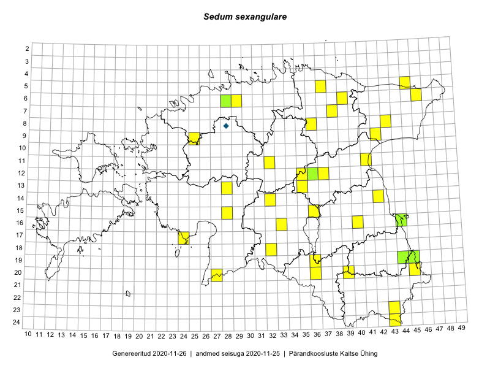

Sedum sexangulare
Uuendatud: 2016-12-07
Kaardile koondatud taksonid: Sedum sexangulare L.

Kaart põhineb 32 vaatlusel. Taime on leitud 28 ruudust.
| Ruut | Vaatleja(d) | Vaatlusaeg | Kirje tüüp | Viide andmebaasikirjele |
|---|---|---|---|---|
| 08-43 | Meeli Mesipuu, Liina Oja | 2015-04-27 | punkt | vaata PlutoFis |
| 12-37 | Peedu Saar, Timo Luhamäe | 2015-05-11 | punkt | vaata PlutoFis |
| 06-39 | Peedu Saar, Timo Luhamäe | 2015-05-13 | punkt | vaata PlutoFis |
| 06-46 | Toomas Kukk, Eerik Leibak | 2015-04-25 | ruut/ala | vaata PlutoFis |
| 05-45 | Toomas Kukk, Eerik Leibak | 2015-04-25 | punkt | vaata PlutoFis |
| 06-46 | Toomas Kukk, Eerik Leibak | 2015-04-25 | punkt | vaata PlutoFis |
| 24-43 | Ott Luuk, Peedu Saar | 2015-08-13 | punkt | vaata PlutoFis |
| 11-41 | Peedu Saar | 2015-08-22 | punkt | vaata PlutoFis |
| 11-32 | Ott Luuk, Toivo Sepp | 2015-05-18 | punkt | vaata PlutoFis |
| 20-27 | Ott Luuk, Eerik Leibak, Liisa Rennel | 2015-05-20 | ruut/ala | vaata PlutoFis |
| 20-27 | Ott Luuk, Eerik Leibak, Liisa Rennel | 2015-05-20 | punkt | vaata PlutoFis |
| 17-24 | Ott Luuk, Eerik Leibak | 2015-05-21 | punkt | vaata PlutoFis |
| 14-42 | Ott Luuk, Peedu Saar | 2015-06-21 | punkt | vaata PlutoFis |
| 09-42 | Timo Luhamäe, Liina Oja | 2015-05-14 | punkt | vaata PlutoFis |
| 13-28 | Liina Oja, Ott Luuk | 2015-05-09 | punkt | vaata PlutoFis |
| 12-35 | Ott Luuk, Liina Oja | 2015-05-11 | punkt | vaata PlutoFis |
| 13-35 | Ott Luuk, Liina Oja | 2015-05-11 | punkt | vaata PlutoFis |
| 20-39 | Toomas Kukk, Eerik Leibak | 2016-04-25 | punkt | vaata PlutoFis |
| 15-36 | Thea Kull, Ott Luuk | 2016-05-05 | punkt | vaata PlutoFis |
| 19-36 | Tiit Hallikma, Ott Luuk | 2016-04-25 | punkt | vaata PlutoFis |
| 23-43 | Tiit Hallikma, Ott Luuk | 2016-04-26 | punkt | vaata PlutoFis |
| 15-28 | Tiit Hallikma, Ott Luuk | 2016-04-28 | punkt | vaata PlutoFis |
| 09-25 | Tiit Hallikma, Ott Luuk | 2016-05-13 | punkt | vaata PlutoFis |
| 05-37 | Tõnu Ploompuu, Eerik Leibak | 2016-07-27 | punkt | vaata PlutoFis |
| 05-37 | Tõnu Ploompuu, Eerik Leibak | 2016-07-27 | punkt | vaata PlutoFis |
| 07-38 | Liina Oja, Eerik Leibak | 2016-07-28 | ruut/ala | vaata PlutoFis |
| 08-36 | Ott Luuk | 2016-08-11 | punkt | vaata PlutoFis |
| 07-38 | Liina Oja, Eerik Leibak | 2016-07-28 | punkt | vaata PlutoFis |
| 06-29 | Toomas Kukk, Sander Laherand | 2016-08-29 | punkt | vaata PlutoFis |
| 14-32 | Liina Oja, Toomas Kukk | 2016-07-21 | punkt | vaata PlutoFis |
| 19-45 | Tiit Hallikma, Toomas Kukk | 2016-06-17 | punkt | vaata PlutoFis |
| 20-36 | Ott Luuk, Thea Kull | 2016-08-23 | punkt | vaata PlutoFis |